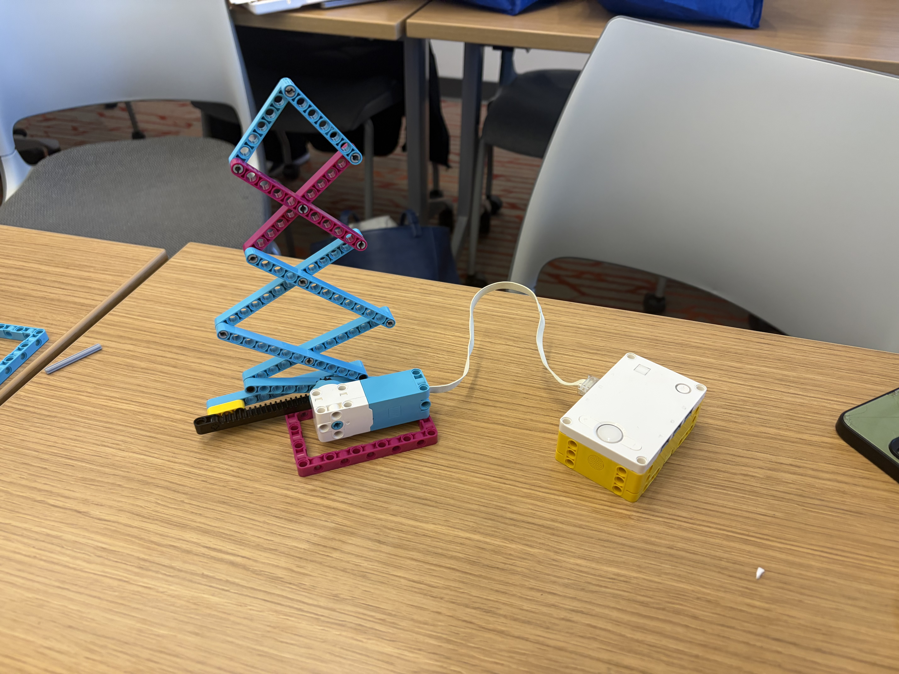

The objective was to explore one of the four sections of our Halloween tasks. We chose scissor lifts, which allow small input movements to create faster and bigger (but weak!) output movement. We then automated it with the motor and linear gears.